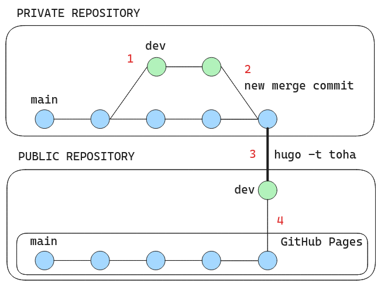
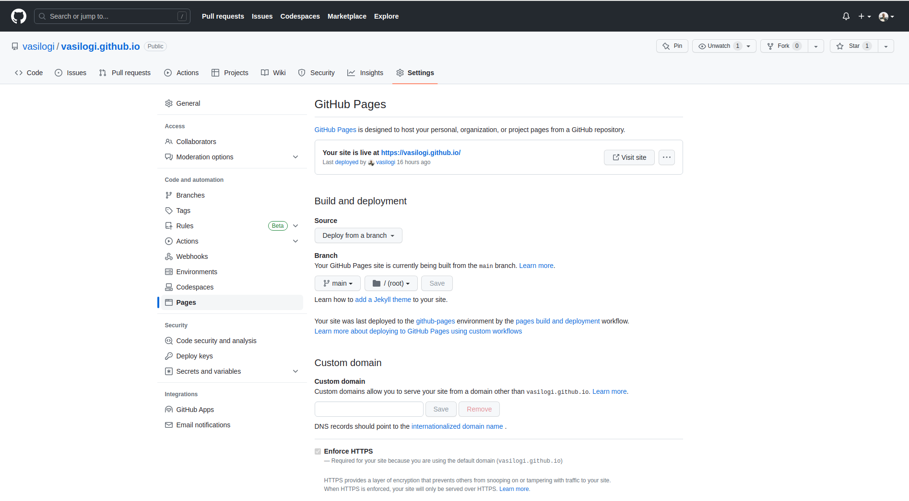
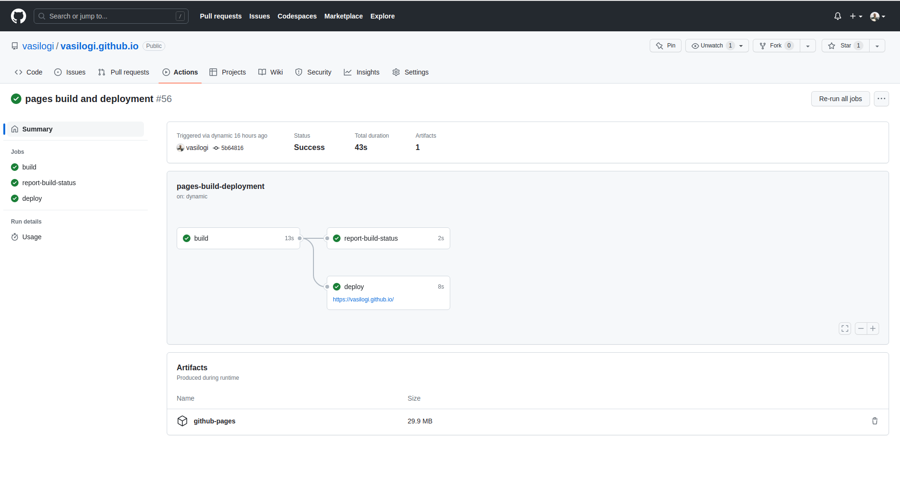
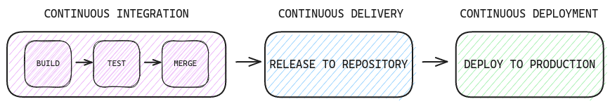
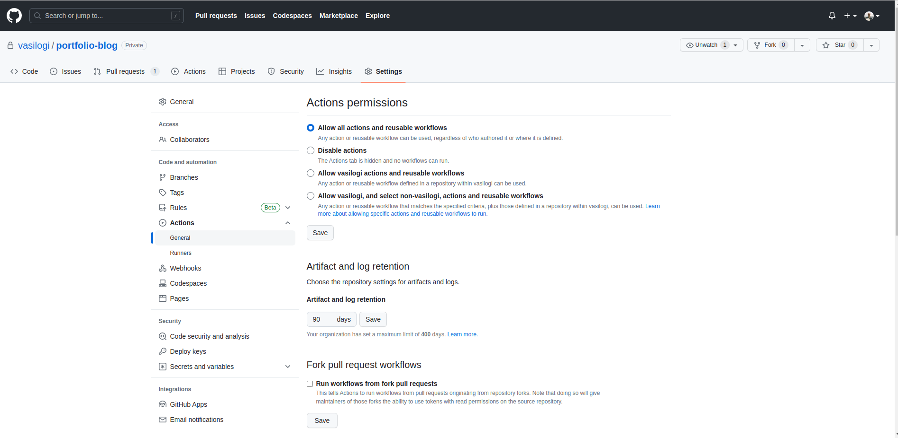
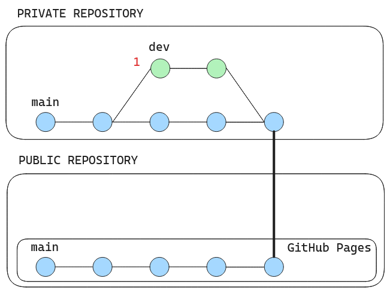

Ioannis Vasilopoulos
Sunday, June 4, 2023
DevOps with Hugo, GitHub Actions, and GitHub Pages
The rationale behind implementing CI/CD for this project
Initially, it’s important to elucidate what the early stages of this project looked like, as this significantly influenced my decision to explore GitHub Actions more thoroughly and ultimately automate the deployment of this website.
The development and hosting of this website, which you’re currently visiting, involve two distinct repositories.
The first repository, maintained as private, is dedicated to the development and storage of my Hugo project.
It consists of two branches: dev and main. The second repository, which is public,
serves as the storage site for the static files generated by Hugo. GitHub Pages utilizes this repository to host my website.
In the early stages of development, my familiarity with Hugo was rather limited. Consequently, I considered essential to establish multiple safeguards before launching my site into production. The process I adopted for this purpose is outlined in the following image and steps:

Step 1: Development
First, all development would be carried out on the dev branch.
Step 2: Testing
Then, I would test the website locally by executing the command hugo server --disableFastRender -t toha -w.
Provided that the test concluded successfully, my next step involved generating the static files into the public repository.
Before delving into the specifics of static file generation, it’s important to note the structure of my project’s scaffold, as illustrated below. In this setup, the public folder is linked to my public repository. Additionally, during the early stages, I was utilizing a dual-branch structure for this repository, namely
devandmain.
./
├── archetypes
├── assets
├── config.yaml
├── content
├── data
├── public
├── README.md
├── resources
├── static
├── themes
└── toha-releases
Following a successful test, I would merge the changes from the dev branch into the main branch of the private repository.
Step 3: Generate static files
Following the merge, I would execute the hugo -t toha command to build the website. In other words, this command was
used to generate the static files into the public folder, correlating to the public repository, which was then active
in the dev branch.
Step 4: Deploy to production
Finally, in the public repository, I have enabled GitHub Pages which builds the site based on the main branch, as you can see in the image below:

Hence, my next step would involve merging the dev into the main branch of the public repository.
Subsequently, GitHub Pages would trigger Actions to deploy the website.
Okay, you got it! We are talking about a complete discontinuous integration and deployment. 💫

CI/CD with GitHub Actions 🚀
Let’s now delve into how I employed GitHub Actions to automate
the aforementioned workflow. My aim was to seamlessly merge all code changes from the dev branch to the main branch of the
private repository, then build the website and directly deploy it into the main branch of the public repository.
To gain a better understanding of the CI/CD methodology that I implemented, refer to the image below.

To begin with, I eliminated the superfluous dev branch of the public repository.
Given that all testing had been performed in the private repository, and the private-to-public delivery essentially constituted a copy of the generated static files, this step was warranted.
Following this, I had to fine-tune a few settings for the private repository and formulate the YAML workflow file. Let’s examine this process in greater detail:
Workflow definition
Before setting up a workflow, we need to enable all actions in the private repository.
This involves navigating to the private repository, then proceeding to Settings > Actions > Allow all actions and reusable workflows, as illustrated in the image below:

Having completed these preliminary steps, we’re now prepared to delineate our GitHub Actions workflow.
This workflow is designed to automatically merge changes from the dev branch into the main branch and subsequently deploy our Hugo website to GitHub Pages.
To accomplish this, we need to create a .github folder at the root of the repository and within that, a workflows folder. Inside workflows, I introduced a file named deploy-site.yml with the following content:
name: Auto merge and deploy
# This workflow is triggered when changes are pushed to the dev branch
on:
push:
branches:
- dev
jobs:
# The first job is to automatically merge the dev branch into main
automerge:
runs-on: ubuntu-latest
steps:
- name: Checkout repo
# Check out the repository using the provided GitHub token
uses: actions/checkout@v3
with:
token: ${{ secrets.PERSONAL_TOKEN }}
- name: Setup Git User
# Set up the Git user name and email for commit operations
run: |
git config --global user.email "jean.vasil@gmail.com"
git config --global user.name "vasilogi"
- name: Merge to main
# Fetch the main branch, switch to it, merge the dev branch into it, and push the changes to origin
run: |
git fetch origin main
git checkout main
git merge -Xtheirs --allow-unrelated-histories --no-edit dev
git push origin main
# The second job is to deploy the changes to GitHub Pages
deploy:
# The deploy job only starts after the automerge job finishes
needs: automerge
runs-on: ubuntu-latest
steps:
- uses: actions/checkout@v3
# Check out the dev branch for the deploy job
with:
ref: dev
- name: Setup Hugo
# Set up Hugo for site building, using the latest version and the extended version
uses: peaceiris/actions-hugo@v2.6.0
with:
hugo-version: 'latest'
extended: true
- name: Update Hugo Modules
# Update the Hugo modules to their latest versions
run: hugo mod tidy
- name: Setup Node
# Set up Node.js with a specific version for potential scripting needs
uses: actions/setup-node@v3
with:
node-version: 18
- name: Install node modules
# Generate a package.json from the Hugo modules and install the Node.js dependencies
run: |
hugo mod npm pack
npm install
- name: Build
# Build the website using the 'toha' Hugo theme
run: hugo -t toha
- name: Deploy
# Deploy the built site to GitHub Pages by pushing the generated content into the specified repository's main branch
uses: peaceiris/actions-gh-pages@v3.9.0
with:
personal_token: ${{ secrets.PERSONAL_TOKEN }}
external_repository: vasilogi/vasilogi.github.io
publish_branch: main
The
secrets.PERSONAL_TOKENmentioned within the workflow needs to be manually created via your profile settings. You can find the instructions for generating such a token here. Then, this token should be pasted into a secret within your repository. You can find the instructions for this step here.
We’ll go over each section and step of the workflow to give you a thorough understanding of what it does and how it works.
Workflow Trigger
The workflow begins with a trigger. In this case, it is triggered by a push event to the dev branch:
on:
push:
branches:
- dev
Whenever you push changes to the dev branch, the workflow starts.
Auto merge job
The workflow comprises two jobs: automerge and deploy. Jobs run in parallel by default, but you can specify dependencies between jobs using the needs keyword.
The automerge job merges changes from the dev branch to the main branch. It runs on an Ubuntu-latest environment:
automerge:
runs-on: ubuntu-latest
Steps of the automerge
- Checkout repo: This step uses the
actions/checkout@v3action to access the contents of the repository in the runner.
- name: Checkout repo
uses: actions/checkout@v3
with:
token: ${{ secrets.PERSONAL_TOKEN }}
- Setup Git User: This step configures the username and email for Git, which will be used when committing changes:
- name: Setup Git User
run: |
git config --global user.email "jean.vasil@gmail.com"
git config --global user.name "vasilogi"
- Merge to main: This step fetches the
mainbranch, switches to it, merges thedevbranch into it, and then pushes the changes to theorigin/main.
- name: Merge to main
run: |
git fetch origin main
git checkout main
git merge -Xtheirs --allow-unrelated-histories --no-edit dev
git push origin main
Deploy job
The deploy job builds the Hugo site and deploys it to GitHub Pages. It only runs after the automerge job has completed successfully, thanks to the needs: automerge keyword.
deploy:
needs: automerge
runs-on: ubuntu-latest
Steps of deploy
- Checkout repo: This step checks out the
devbranch of the repository.
- uses: actions/checkout@v3
with:
ref: dev
- Setup Hugo: This step sets up Hugo using the
peaceiris/actions-hugo@v2.6.0action.
- name: Setup Hugo
uses: peaceiris/actions-hugo@v2.6.0
with:
hugo-version: 'latest'
extended: true
- Update Hugo Modules: This step updates the Hugo modules to their latest versions.
- name: Update Hugo Modules
run: hugo mod tidy
- Setup Node: This step sets up
Node.js, which is necessary if your site uses JavaScript-based tools.
- name: Setup Node
uses: actions/setup-node@v3
with:
node-version: 18
- Install node modules: This step installs any
Node.jsdependencies needed for your Hugo site.
- name: Install node modules
run: |
hugo mod npm pack
npm install
- Build: This step builds your Hugo site using a specific theme (Toha).
- name: Build
run: hugo -t toha
- Deploy: Finally, the built site is deployed to GitHub Pages by pushing the content into the
mainbranch of a specified repository.
- name: Deploy
uses: peaceiris/actions-gh-pages@v3.9.0
with:
personal_token: ${{ secrets.PERSONAL_TOKEN }}
external_repository: vasilogi/vasilogi.github.io
publish_branch: main
Conclusion ✅
The end result is depicted in the image below.

In conclusion, incorporating CI/CD with GitHub Actions into my project has brought about a transformative shift in how I manage the development and deployment processes.
It has automated repetitive tasks, notably merging changes from the dev branch and deploying the website to production.
This shift has allowed me to focus more on the essence of my content and enhancing the website’s features, rather than getting bogged down by the intricacies of the deployment process.
Moreover, it has introduced a high degree of consistency and reliability to the deployment process.
Errors are now caught earlier in the development phase, which improves the overall quality of the deployed site and, by extension, the end-user experience.
In essence, the integration of CI/CD with GitHub Actions has elevated my project management to a new level of efficiency, consistency, and quality.